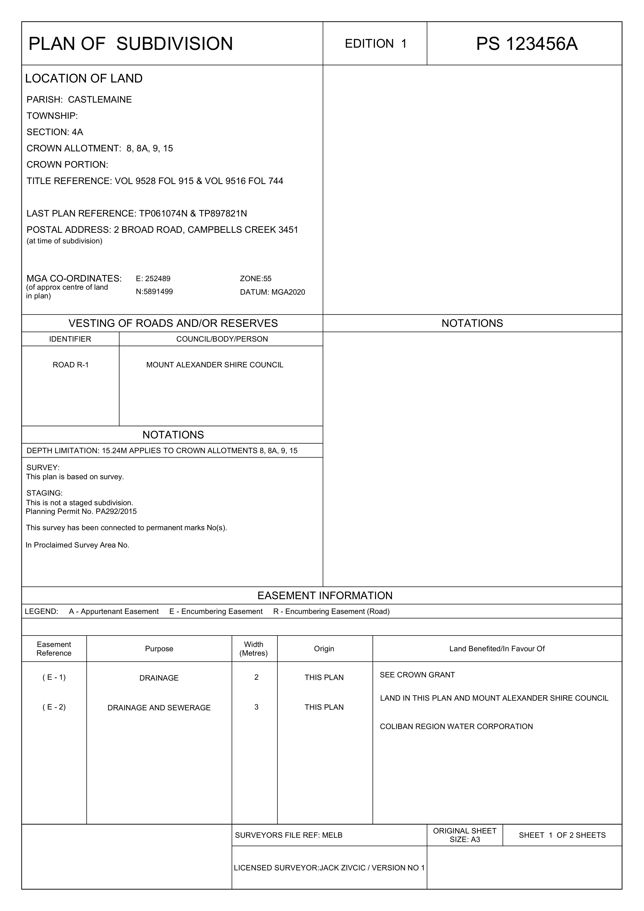
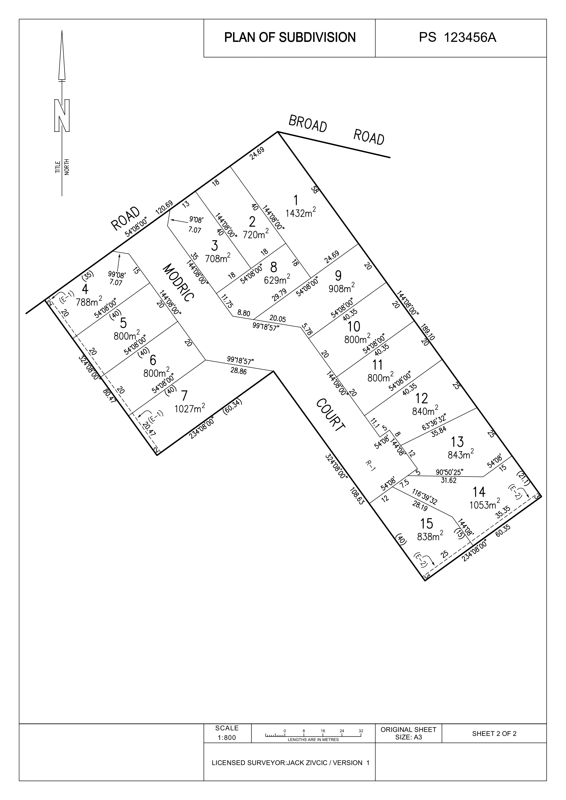

Geoportfolio
Jack Zivcic
About
This website is the geoportfolio of Jack Zivcic. The website entails
information that is academically and profesionally related to the field of land surveying.
A brief introduction about myself is that I am born and raised in Geelong, Australia and as of September 2024, I am in my fourth and final year of the
Bachelor of Applied Science (Surveying) (Honours) course. My surveying-related interests are conducting field surveys, reducing and processing field work and also drafting surveys.
Although I am a surveying student, my current project is a geospatial-based one. My project is mapping crime hotspots of the Melbourne metropolitan area over the last ten years.
My own personal hobbies include playing soccer and travelling.
Academic Portfolio Overview
Cartography 2
Cartography 2 consists of creating maps using spatial data obtained from sources such as publicly online government data and population numbers from the Australian
Bureau of Statistics (ABS). The subject had 6 different submissions which were five map-based submissions and one quiz including a major final map design of our choice:
- Assessment Task 1: Map Projections Assignment
- Assessment Task 2.1: Basic Mapping in ArcGIS Pro
- Assessment Task 2.2: Mapping for a Specific User Group
- Assessment Task 2.3: Thematic Mapping
- Assessment Task 3: Final Map Design Assessment
- Assessment Task 4: Cartography Quiz
Note: If map display is too small, right-click the image and 'Open in new tab' to allow zooming of the map.
Melbourne Map: Sporting Venues near the Melbourne CBD (Final Map Design Assessment)

Cadastral Surveying Law
Cadastral Surveying Law was a subject that consisted of learning the laws related to cadastral surveying and how to abide by them when working as a surveyor.
There were six submissions required in the course:
- Five Quizzes and a Test
- Parkville Practical Survey
- Plan of Subdivision
- Urban Cadastral Re0establishment
The plan of subdivision was created in AutoCAD where were given subvidision documents and combined them to be able to fully draft the new subdivision whilst also including a
facesheet.
Note: If POS display is too small, right-click the image and 'Open in new tab' to allow zooming of the map.
Facesheet (Plan of Subdivison)

POS (Plan of Subdivision)

Industry Experience
This page will briefly cover all of my work experience (as of September 2024) within the surveying industry. The sole surveying company that I have worked at
is Structerre Consulting. This page will outline my experience gained and skills I have learned from working at Structerre Consulting along with an
overview of my current surveying skillset.
Structerre Consulting

Survey Assistant
October 2020 - Ongoing
My time at Structerre Consulting is as a permanent employee as a survey assistant. My time working there has taught me a lot about what industry
standard work is done within the surveying industry. I chose to work at Structerre Consulting as I was referred by another surveyor in the industry when seeking for work
and Structerre simultaneously seeking a Geelong-based employee. The work at Structerre Consulting covers a broad range as they operate as a one-stop shop where they
provide engineering, surveying and soil testing services to clients across Australia.
As part of the survey team, the work I undertake mainly consists of conducting surveys of varying forms to both arbitrary and AHD datums, processing and reducing them
and then sending them to our team based in Vietnam for drafting. I also perform Bushfire Attack Level (BAL) assessments when requested by clients. At Structerre we
use Trimble total stations, controllers and GPS as well as Bince GPS. The computer programs we use are Trimble Business Centre and Autocad.
Skills and Proficiencies
 |
TBC |
|
LISCAD |
|
AutoCAD |
 |
Surveying |
 |
BAL Assessments |
 |
ArcGIS Pro |
|
GPS |
 |
FFL Checks |
Credits and Attributions
The following programming languages and software were used to create the website
- HTML
- CSS
- JavaScript
- Visual Studio Basic
The deliverables contains content from the following subjects:
- Cartography 2 (GEOM2079)
- Cadastral Surveying Practice (GEOM2101)
Special thanks to the following people who have helped me make this website with their expertise and guidance:
As per the policy of using the Flaticons with a free account, the attributions and crediting of the creators of the icons are as below:
Attributions of icons used: